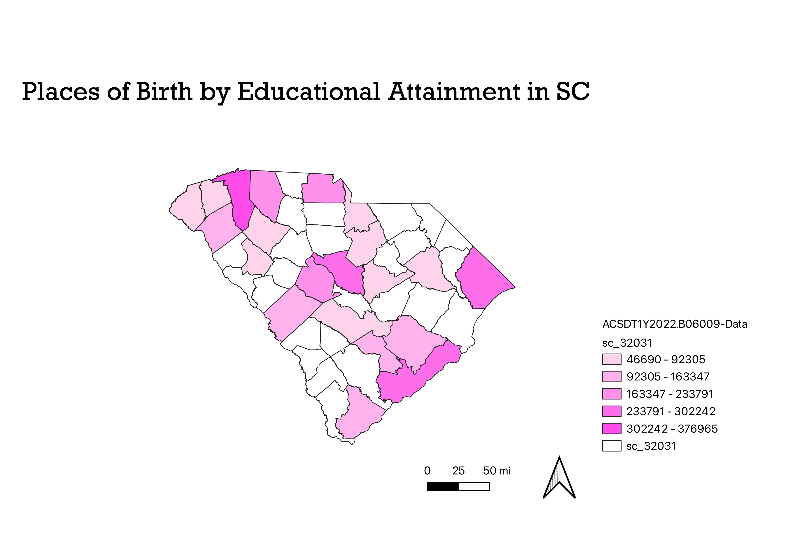

Homework 6

The map shows counties in SC and their total number of educational attainment in terms of place of birth. Educational attainment is defined by less than high school graduate, highh school graduate, some college or associate's degree, bachelor's degree, and graduate or professional degree. Instead of showing each level, this map just shows total of educational attainment. Some counties were without data, which signifies the counties in white.
Vector
CSV Data